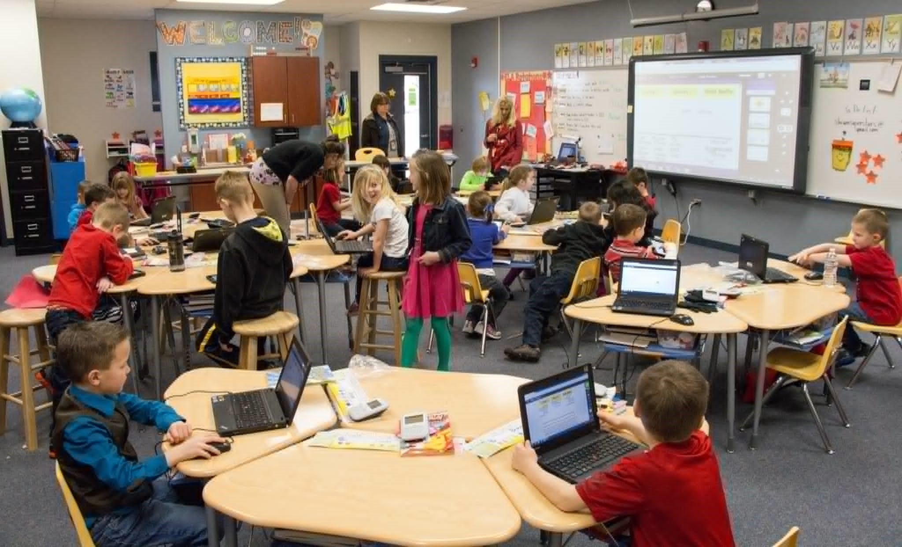
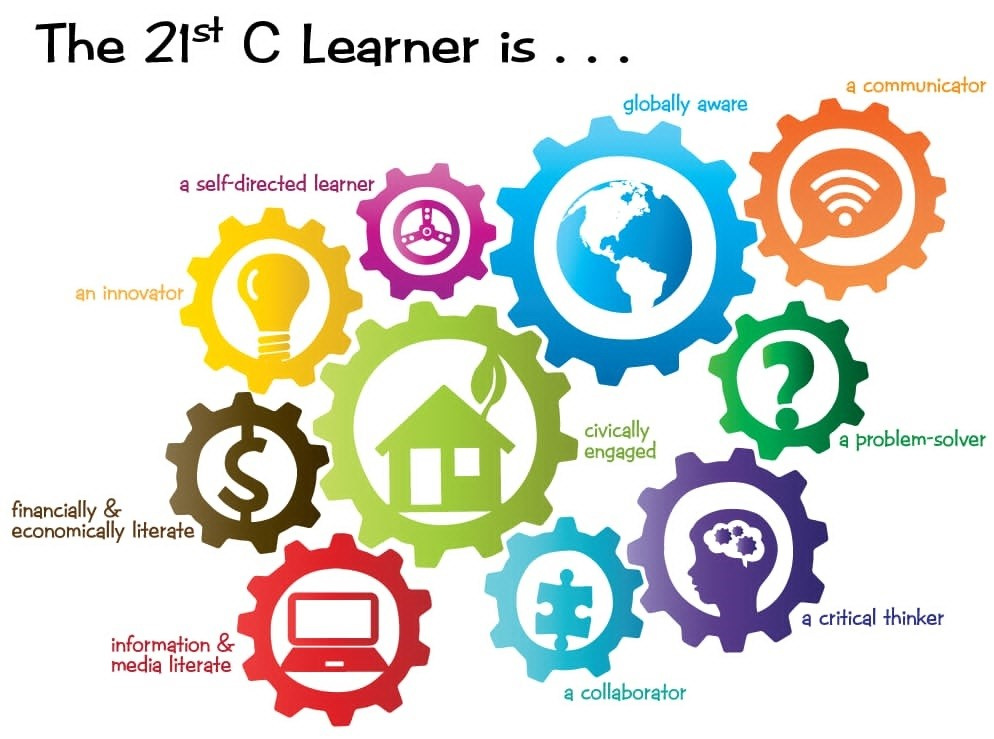

Engaging Instruction
Videos, presentations, animations, and educational applications help teachers explain lessons clearly and keep learners actively involved.
Technology for Teaching and Learning
A curated portfolio showing how digital tools, responsible classroom management, and learner-centered strategies can make education more interactive, accessible, and meaningful.

Portfolio Owner
Bachelor of Elementary Education, Third Year. This portfolio presents meaningful learnings from Technology for Teaching and Learning and connects educational technology concepts to real classroom practice.
Focused on flexible, creative, and responsible technology integration.
Core Ideas
Videos, presentations, animations, and educational applications help teachers explain lessons clearly and keep learners actively involved.
Online tools encourage learners to communicate, work together, explore information, and build confidence in using digital resources.
Digital learning supports creativity, critical thinking, collaboration, digital literacy, assessment, and timely feedback.

Learning Focus
Technology supports students as self-directed learners, collaborators, communicators, innovators, problem-solvers, and critical thinkers who can participate responsibly in a digital world.
See technologies and tools